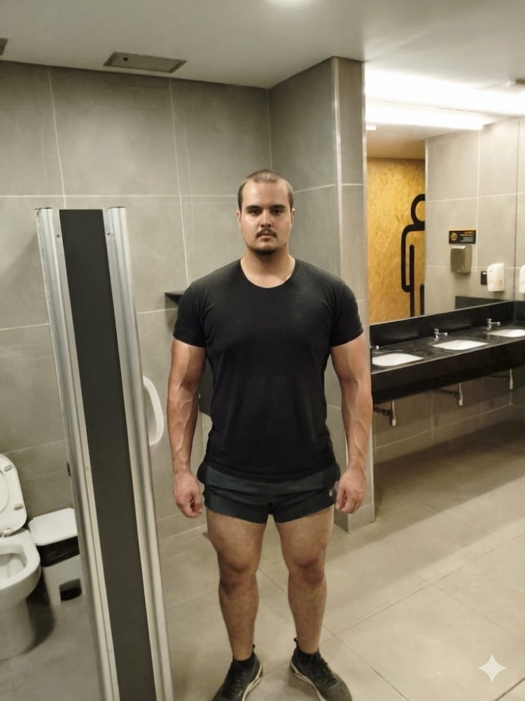
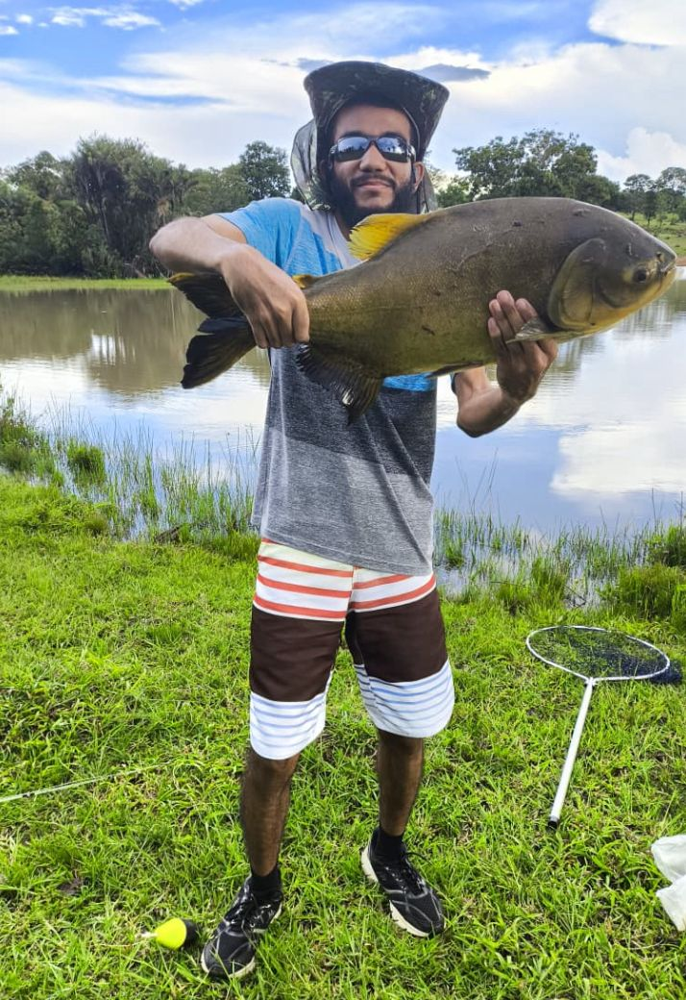
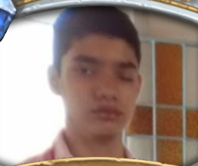
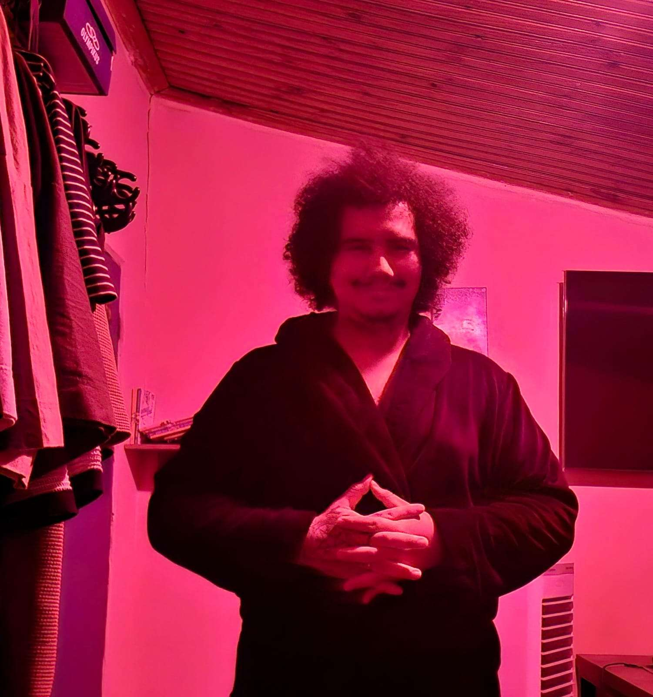
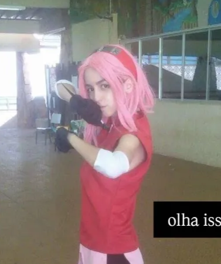
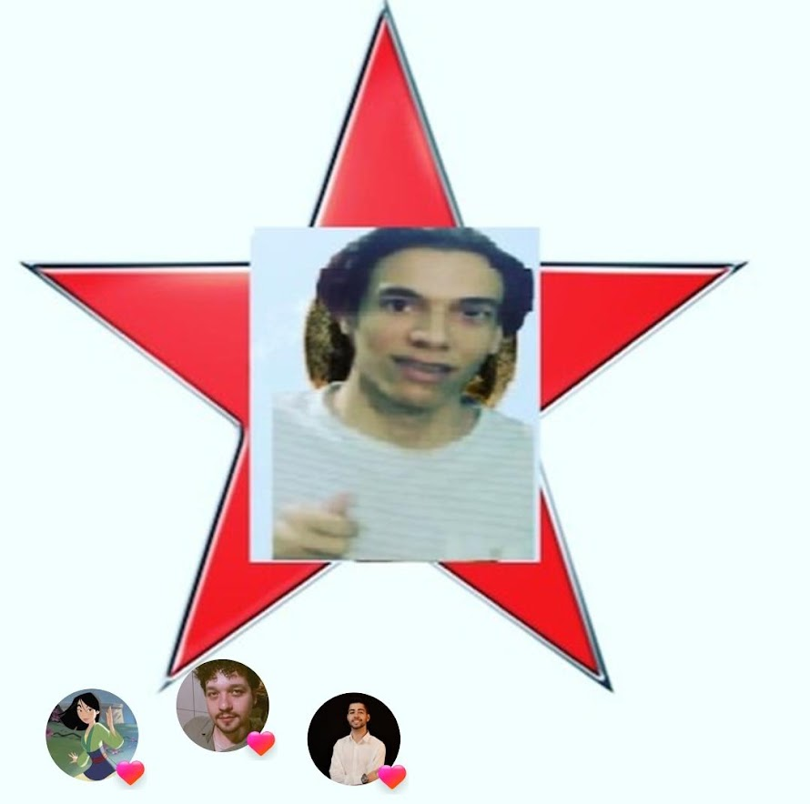
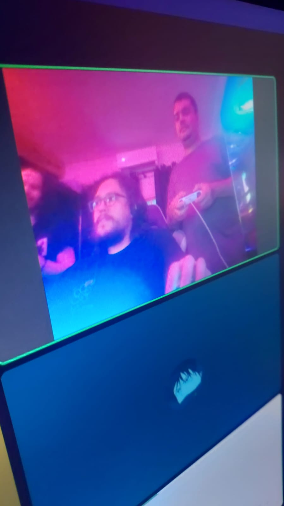
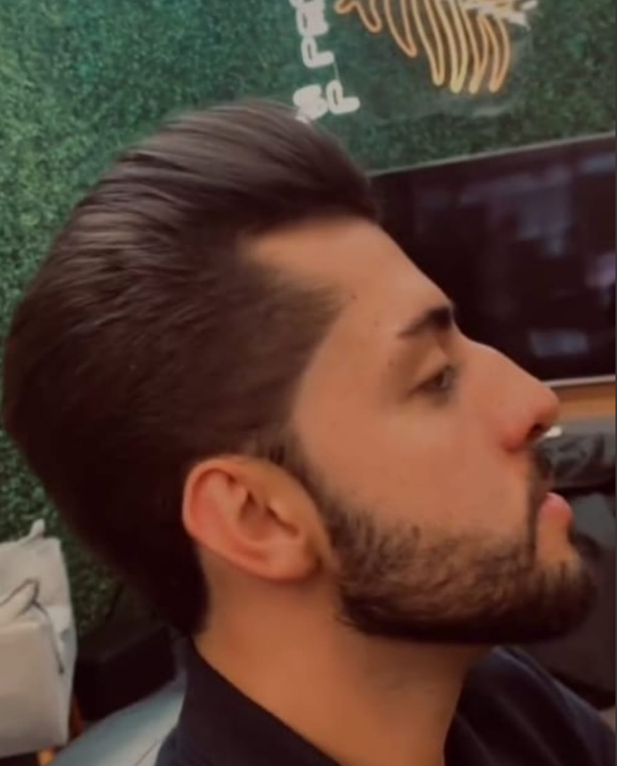
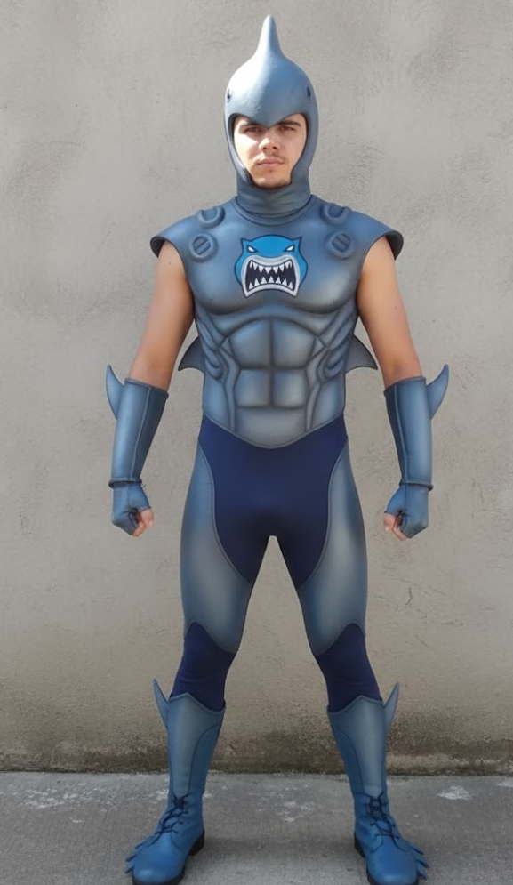
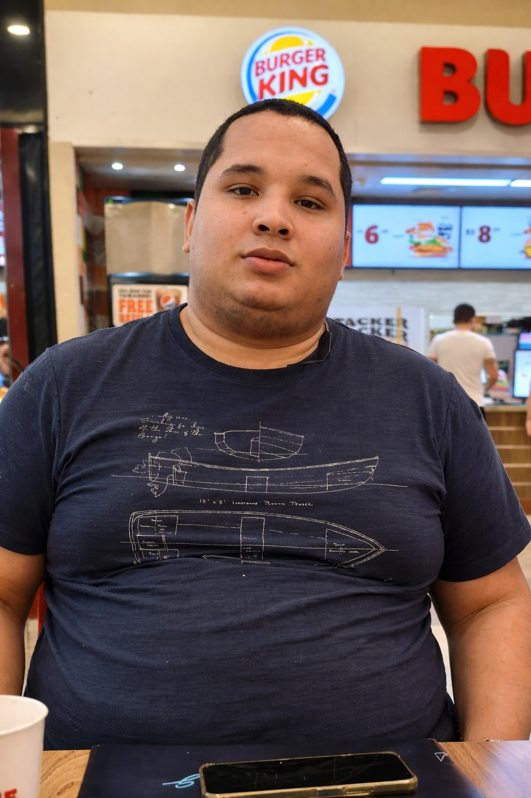

S
🔥 NERDS LENDÁRIOS
Perderam o controle faz tempo — sem volta

🥇 1º
Tier S
Teta
O Arquivo Vivo
- Dungeons & Dragons + card game + mestre de Pokémon
- RPG em nível absurdo + conhecimento técnico
- Ainda trabalha e vive "normalmente" (??)
👉 Veredicto
Esse aqui é o tipo que explica regra que nem o criador lembra. NERD RAIZ PURA.

🥈 2º
Tier S
Aurelio
O Prisioneiro do Grind
- 5k horas de Destiny
- Gacha chinês + fã da 2B
- Vive no quarto
👉 Veredicto
Já não joga… habita o jogo. Nível preocupante (com respeito).
🥉 3º
Tier S
Arthur
O Ermitão Estratégico
- Barony + Civilization
- Não sai de casa
👉 Veredicto
Vive em turnos, pensa em build até dormindo. Mente de general, vida de NPC.
A
🧠 NERDS HARDCORE
Altíssimo nível — não brinque
4º
Tier A
Messias
O Nerd Técnico
- Diablo + Dungeons & Dragons
- Programador + RPG + MOBA
👉 Veredicto
Perigoso porque une: cérebro + nerdice + dinheiro.
5º
Tier A
John
O Protagonista
- Assiste anime TODO DIA
- Fanático por JoJo's Bizarre Adventure
- Moto com nome próprio + estilo próprio
👉 Veredicto
Esse aqui não é só nerd… é personagem principal da própria história.
6º
Tier A
Murilo
O No-Life Clássico
- Monster Hunter + World of Warcraft
- Nunca trabalhou + vive em casa
👉 Veredicto
Tempo infinito + grind infinito. Combinação perigosa.

7º
Tier A
Kururu
O Consumidor de Hardware
- Path of Exile 2
- Vive pesquisando peça de PC
👉 Veredicto
Esse aqui não joga… ele otimiza a existência.
B
🎮 NERDS CONSISTENTES
Sólidos, confiáveis, dedicados

8º
Tier B
Cuei
O Nerd Artista
- Dungeons & Dragons + indie + Hollow Knight
- Desenhista
👉 Veredicto
Nerd + criatividade. Build diferenciada.
9º
Tier B
Lukeny
O Nerd Social
- Bleach + Metal Gear + League of Legends
- Trabalha + vida equilibrada
👉 Veredicto
Raro: nerd que funciona na sociedade.

10º
Tier B
Mela
O Nerd Caótico
- Fallout + Metal Gear + anime
- Gostos duvidosos
👉 Veredicto
Nerd raiz… mas com DLC proibida ativada. 💀

11º
Tier B
Alanys
A Nerd Estilosa
- JoJo's Bizarre Adventure + cosplay
- Quiz + palavras cruzadas
👉 Veredicto
Nerd estética + intelectual. Build charmosa.
C
🎯 NERDS CASUAIS / HÍBRIDOS
Nerd + vida real — o equilíbrio

12º
Tier C
Paulin
O Professor Gamer
- Genshin Impact + Subnautica
- Professor de matemática
👉 Veredicto
Nerd equilibrado. Vive entre planilha e game.

13º
Tier C
Tchola
O Shonen Player
- Naruto + Resident Evil + Animes shonen
- Curte futebol + Não sai muito de casa
👉 Veredicto
Metade nerd, metade brasileiro padrão.

14º
Tier C
Lukinha
O Informante
- Naruto + séries tipo Supernatural
- Espalha informação (ou não 👀)
👉 Veredicto
Nerd + fofoqueiro profissional.
D
🟡 QUASE NPC
Chegou perto… mas não era pra ser

15º
Tier D
Rafinha
O Confuso
- F1 + futebol + sertanejo
- Joga de tudo, mas não domina nada
👉 Veredicto
Tentou ser nerd… faltou especialização.

💀 16º
Tier D
Weide
O Turista dos Animes
- Assiste TODOS os isekai possíveis — não sabe explicar nenhum 💀
- Joga tudo por 1 hora e abandona
- League of Legends desde 2014… com habilidade de iniciante
- Pai + trabalha de seg a sab
👉 Caso Científico
Ele é o menos nerd por: não se aprofundar em nada, não desenvolver skill, consumir conteúdo superficialmente.
Consome tudo, absorve nada.
Consome tudo, absorve nada.
⚠️ Aviso Científico
Este ranking foi elaborado pelo Dr. Weide José (PhD honorário autoatribuído) com base em observações empíricas, sentimento pessoal e nenhuma metodologia verificável. Qualquer semelhança com a realidade é coincidência. Os rankeados podem recorrer ao comitê editorial, que é composto exclusivamente por Weide José.